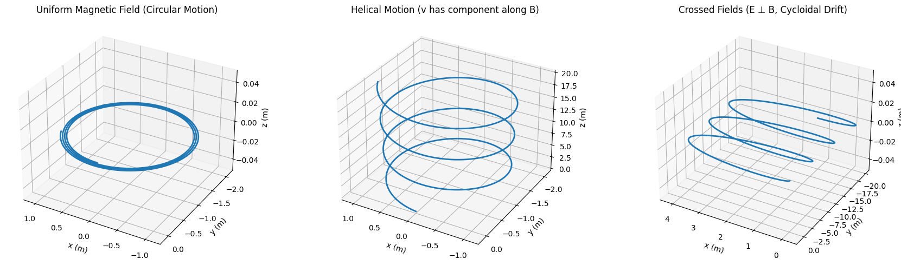

Problem 1
Simulating the Effects of the Lorentz Force
1. Exploration of Applications
The Lorentz force, given by
$$
\vec{F} = q\vec{E} + q(\vec{v} \times \vec{B})
$$
plays a central role in the dynamics of charged particles in electromagnetic fields. This force is foundational in various physical and technological systems:
-
Particle Accelerators: Charged particles are accelerated and steered using electric and magnetic fields, relying on the Lorentz force to control beam paths.
-
Mass Spectrometers: Particles are deflected by magnetic fields in a manner dependent on their charge-to-mass ratio, allowing identification of isotopes and elements.
-
Plasma Confinement (e.g., Tokamaks): Magnetic fields are used to confine high-energy plasma, preventing contact with containment walls and sustaining fusion reactions.
-
Cathode Ray Tubes and Electron Microscopes: Manipulate electron beams with electromagnetic fields for display or imaging purposes.
-
Auroras and Cosmic Ray Deflection: Earth's magnetic field influences charged particles from space, a natural demonstration of the Lorentz force.
In each case, electric fields (\(\vec{E}\)) are used primarily for accelerating particles, while magnetic fields (\(\vec{B}\)) are used for guiding or confining their motion.
2. Simulating Particle Motion
We numerically solve the motion of a charged particle using the Lorentz force law in the following scenarios:
a. Uniform Magnetic Field (B only)
With no electric field, and an initial velocity perpendicular to \(\vec{B}\), the particle undergoes circular motion in the plane perpendicular to \(\vec{B}\) due to the magnetic force acting as a centripetal force.
b. Combined Uniform Electric and Magnetic Fields
When both \(\vec{E}\) and \(\vec{B}\) are present, the trajectory depends on their relative orientation:
- Helical motion if \(\vec{v}\) has components both parallel and perpendicular to \(\vec{B}\).
- Spiral acceleration when \(\vec{E}\) is not perpendicular to \(\vec{B}\).
- Cycloidal or drifting motion depending on field orientations.
c. Crossed Fields (\(\vec{E} \perp \vec{B}\))
Produces a constant drift velocity: $$ \vec{v}_{\text{drift}} = \frac{\vec{E} \times \vec{B}}{B^2} $$
The motion becomes a cycloidal path: a combination of circular motion (due to \(\vec{B}\)) and linear drift (due to \(\vec{E} \times \vec{B}\)).
3. Parameter Exploration
Various physical parameters significantly affect the particle’s motion:
- Field Strengths (\(\vec{E}\), \(\vec{B}\)):
- Stronger \(\vec{B}\) results in tighter circular paths (smaller Larmor radius).
-
Stronger \(\vec{E}\) increases acceleration or drift speed.
-
Initial Velocity (\(\vec{v}\)):
-
Determines whether motion is circular (\(\vec{v} \perp \vec{B}\)), helical, or more complex.
-
Charge (\(q\)) and Mass (\(m\)):
- The Larmor radius: $$ r_L = \frac{mv_\perp}{|q|B} $$
- The cyclotron frequency: $$ \omega_c = \frac{|q|B}{m} $$
- Heavier or lower-charge particles have wider paths and slower rotations.
4. Visualization
Visual representations were created for different scenarios:
- 2D and 3D Plots: Show particle trajectories in response to field configurations.
- Circular Orbits: Seen in uniform \(\vec{B}\) fields with \(\vec{v} \perp \vec{B}\).
- Helical Paths: When particle has a velocity component along \(\vec{B}\).
- Drift Motion: Occurs in crossed fields; particle moves uniformly in \(\vec{E} \times \vec{B}\) direction.
These plots illustrate important physical quantities:
- Larmor Radius: Radius of circular motion in a magnetic field.
- Drift Velocity: Net motion in crossed fields, independent of mass or charge sign.
5. Discussion and Real-World Relevance
This simulation illustrates foundational behavior seen in:
- Cyclotrons: Use circular motion in magnetic fields to accelerate particles.
- Magnetic Bottles and Traps: Rely on helical and mirror motion to confine plasmas.
- Fusion Reactors: Use magnetic fields to sustain and control high-energy plasmas.
- Space Physics: Helical motion and drifts explain particle behavior in Earth’s magnetosphere.
6. Suggestions for Extension
To further enhance realism and complexity:
- Introduce non-uniform fields (spatially varying \(\vec{E}\) and \(\vec{B}\)).
- Model collisions or radiation losses in plasma simulations.
- Include relativistic effects for high-velocity particles.
- Simulate multi-particle systems to study collective effects in plasmas.
- Use higher-order solvers (e.g., Runge-Kutta) for improved accuracy.
